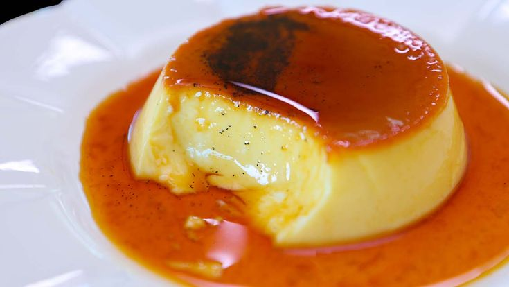

Ruisse Oebree Candelaria - 9-Sodium - August 28, 2025
My Favorite Recipe
I luv Leche Flan because it’s creamy, sweet, and always present at our family celebrations.

Ingredients
- 10 egg yolks
- 1 can (300 ml) sweetened condensed milk
- 1 can (370 ml) evaporated milk
- 1 cup sugar (for caramel)
- 1 teaspoon vanilla extract
Instructions
- Melt the sugar in a pan over low heat until it turns into golden caramel. Pour into a llanera or baking dish and spread evenly.
- In a bowl, mix egg yolks, condensed milk, evaporated milk, and vanilla extract. Stir gently to avoid bubbles.
- Pour the mixture into the caramel-coated llanera.
- Cover with foil and steam or bake using a water bath for about 45–60 minutes, or until set.
- Let it cool, then refrigerate before serving.
- Invert onto a plate to release the caramel on top.